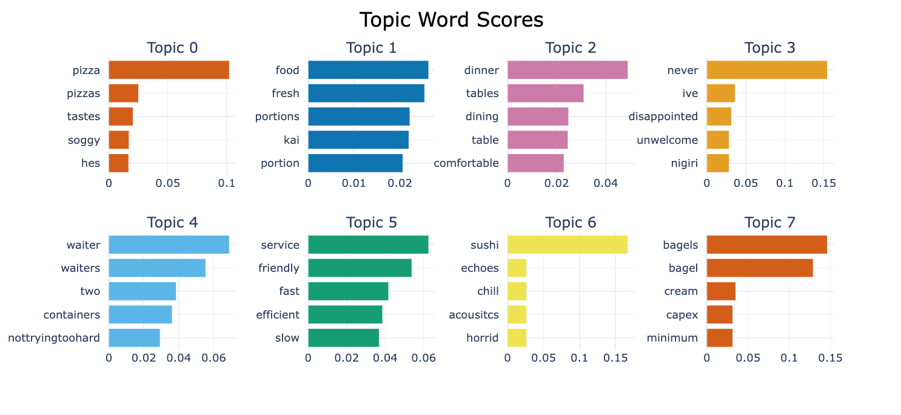

Team 24
Anurag Arasan, Rammanoj Potla, Vaishnavee Mannivannan, Fabian Christopher
Aspect Extraction
Aspect Extraction
BERTopic
Uses transformers c-TF-IDF to determine topic clusters
Aspect Extraction
BERTopic
Uses transformers c-TF-IDF to determine topic clusters
Final Aspects: food, price, ambience, service
Domain-Specific Language Models
Domain-Specific Language Models
Logistic Regression
Domain-Specific Language Models
Naive Bayes
Domain-Specific Language Models
LSTM
Domain-Specific Language Models
BERT Base Uncased
Let's try it!
Future Work and Improvements
Future Work and Improvements